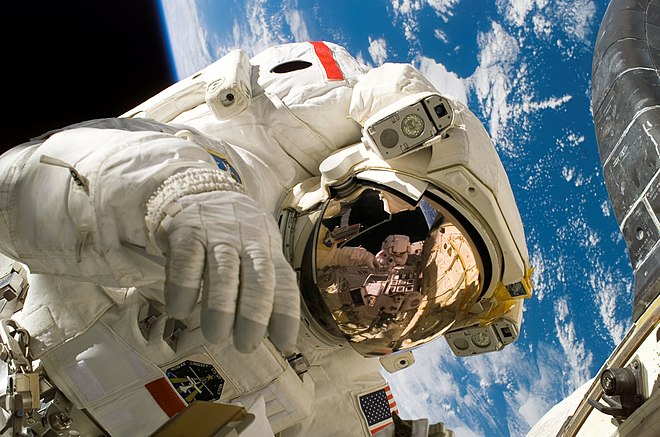

Section Espace
Les lanceurs spatiaux
Cette page contient: 11chapitres

Chapitre 1 : Introduction aux Lanceurs Spatiaux
Les lanceurs spatiaux sont essentiels pour envoyer des satellites, des sondes et des équipages humains dans l'espace. Depuis les premiers jours de l'exploration spatiale, ces véhicules ont évolué pour devenir plus puissants, plus fiables et plus économiques. L'avenir des lanceurs spatiaux promet des innovations encore plus grandes, avec des objectifs ambitieux allant de l'exploration planétaire au tourisme spatial.
Chapitre 2 : L'Histoire des Lanceurs Spatiaux
L'histoire des lanceurs spatiaux commence avec le lancement du satellite Spoutnik par l'Union soviétique en 1957. Ce lancement historique, suivi de près par les États-Unis avec le lancement de l'Explorer 1 en 1958, a marqué le début de l'ère spatiale. Depuis lors, des milliers de lancements ont eu lieu, propulsant des satellites de communication, des missions scientifiques et des équipages humains dans l'espace.
Chapitre 3 : Les Lanceurs Traditionnels
Les lanceurs traditionnels, comme la fusée Saturn V utilisée pour les missions Apollo, étaient des véhicules à usage unique. Ces lanceurs étaient incroyablement puissants mais coûtaient cher à produire et à lancer. Les technologies de propulsion chimique, principalement basées sur des carburants liquides et solides, ont dominé cette ère, offrant une poussée nécessaire pour atteindre l'orbite terrestre et au-delà.
Chapitre 4 : L'Émergence des Lanceurs Réutilisables
Les lanceurs réutilisables représentent une révolution dans l'industrie spatiale. SpaceX, avec sa fusée Falcon 9, a démontré que les lanceurs peuvent être récupérés et réutilisés, réduisant ainsi les coûts de lancement de manière significative. Cette innovation ouvre la voie à des lancements plus fréquents et plus abordables, facilitant l'accès à l'espace pour une variété de missions.
Chapitre 5 : Les Nouvelles Technologies de Propulsion
Les nouvelles technologies de propulsion promettent de transformer les lanceurs spatiaux. Des moteurs à propulsion électrique, nucléaire et même à fusion sont en cours de développement. Ces technologies pourraient offrir des voyages plus rapides et plus efficaces vers les destinations lointaines, y compris Mars et les autres planètes du système solaire.
Chapitre 6 : Les Lanceurs Ultra-lourds
Les lanceurs ultra-lourds, comme le Space Launch System (SLS) de la NASA et le Starship de SpaceX, sont conçus pour transporter des charges utiles très lourdes et des équipages humains vers la Lune, Mars et au-delà. Ces lanceurs joueront un rôle crucial dans les futures missions d'exploration planétaire et la construction de bases spatiales.
Chapitre 7 : Les Lanceurs Privés
Le secteur privé joue un rôle croissant dans le développement des lanceurs spatiaux. Des entreprises comme Blue Origin, Rocket Lab et Relativity Space innovent avec de nouvelles conceptions de fusées et des approches de lancement. La concurrence accrue stimule l'innovation et réduit les coûts, rendant l'accès à l'espace plus accessible pour les gouvernements, les entreprises et même les particuliers.
Chapitre 8 : Le Tourisme Spatial et les Lanceurs
Le tourisme spatial est un domaine émergent qui dépend des lanceurs spatiaux. SpaceX, Blue Origin et Virgin Galactic travaillent tous sur des systèmes de lancement qui peuvent transporter des touristes spatiaux en orbite basse ou en vols suborbitaux. Cette nouvelle industrie pourrait ouvrir l'espace à des centaines, voire des milliers de personnes chaque année.
Chapitre 9 : La Collaboration Internationale
La collaboration internationale est essentielle pour le développement des lanceurs spatiaux. Des programmes comme Arianespace en Europe et des collaborations entre la NASA et Roscosmos démontrent l'importance du travail conjoint. Ces partenariats permettent de partager les coûts, de combiner les expertises et de réaliser des missions plus ambitieuses.
Chapitre 10 : Les Défis Technologiques
Le développement de nouveaux lanceurs spatiaux présente des défis technologiques considérables. La gestion de la chaleur, la réduction des vibrations et l'amélioration de l'efficacité énergétique sont des domaines clés de recherche. De plus, la miniaturisation des composants et l'utilisation de matériaux avancés joueront un rôle crucial dans la prochaine génération de lanceurs.
Chapitre 11 : Les Implications Environnementales
Les lanceurs spatiaux ont des impacts environnementaux, notamment en termes d'émissions de gaz à effet de serre et de débris spatiaux. La recherche se concentre sur le développement de carburants plus propres et de technologies de déorbitation pour minimiser ces impacts. Les politiques de réglementation environnementale joueront également un rôle crucial pour garantir un développement spatial durable.
Conclusion : Un Futur Prometteur
L'avenir des lanceurs spatiaux est rempli de promesses et de possibilités. Avec les innovations technologiques en cours, les collaborations internationales et l'émergence du secteur privé, les lanceurs spatiaux deviendront plus efficaces, plus économiques et plus écologiques. Ces avancées ouvriront de nouvelles frontières pour l'exploration spatiale, le tourisme spatial et les missions interplanétaires, transformant notre vision de ce qui est possible dans l'espace.